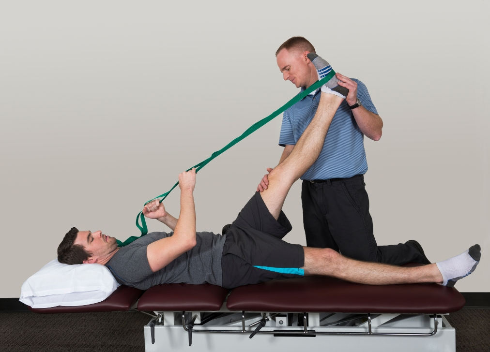

مقدمة عن خشونة المفاصل وهشاشة العظام
تعتبر خشونة المفاصل وهشاشة العظام من أكثر المشاكل الصحية شيوعاً والتي تؤثر بشكل مباشر على الحركة والقدرة على ممارسة الأنشطة اليومية. تسبب هذه الحالات آلاماً مزمنة، وتصلباً في المفاصل، وضعفاً في العضلات المحيطة بها مما يقلل من جودة الحياة إذا لم يتم التعامل معها ببرامج تأهيلية متكاملة.
في **مركز هنا التفاؤل للعلاج الطبيعي والتأهيل ببيشة**، نقدم برامج علاجية مخصصة تعتمد على أحدث التقنيات والتمارين العلاجية لتقليل الألم، تقوية العضلات الداعمة للمفاصل، وزيادة كثافة العظام بالتحفيز الميكانيكي الآمن.
الفرق بين خشونة المفاصل (Osteoarthritis) وهشاشة العظام (Osteoporosis)
خشونة المفاصل
حالة تآكل تدريجي في الغضاريف المبطنة للمفاصل (مثل الركبة، الورك، والفقرات)، مما يؤدي إلى احتكاك العظام ببعضها وظهور الألم والانتفاخ وتصلب المفصل.
هشاشة العظام
انخفاض في كثافة العظام ورقاقتها، مما يجعلها ضعيفة وقابلة للكسر بسرعة حتى مع الإصابات البسيطة، ولا تسبب عادة ألم في مراحلها الأولى إلا عند حدوث كسور.
أبرز أعراض خشونة المفاصل وهشاشة العظام
- ألم عند تحميل الوزن على المفصل أو أثناء الصعود والهبوط من السلالم.
- تصلب تيبس في المفصل خاصة في الصباح عند الاستيقاظ أو بعد فترات الجلوس الطويلة.
- ضعف واضح في العضلات المحيطة بالمفصل مما يزيد من الضغط الواقع عليه.
- نقص المدى الحركي وشعور بالطقطقة أو الاحتكاك أثناء الحركة.
دور العلاج الطبيعي والتأهيل الطبي في بيشة
يلعب العلاج الطبيعي دوراً محروياً أساسياً في علاج خشونة المفاصل والحد من مضاعفات هشاشة العظام بدون الحاجة إلى التدخلات الجراحية المبكرة. تشمل خطة التأهيل في **مركز هنا التفاؤل**:
جلسات تخفيف الألم والالتهاب
باستخدام أحدث أجهزة العلاج الكهربائي، موجات التردد الحراري، والكمادات الحرارية/الباردة لتقليل الانتفاخ والألم.
التمارين العلاجية وتقوية العضلات
تمارين تقوية متخصصة للعضلات الرباعية والأوتار الخلفية المحيطة بالركبة والورك لامتصاص الصدمات وتخفيف العبء عن الغضاريف.
تمارين التحميل والتوازن لمكافحة الهشاشة
تمارين مقاومة آمنة تساعد على تنشيط الخلايا البانية للعظام (Osteoblasts) وتقليل خطر السقوط والكسور.
هل تعاني من آلام الخشونة أو ضعف العظام والمفاصل؟
احجز جلستك اليوم في مركز هنا التفاؤل ببيشة تحت إشراف نخبة من أخصائيي العلاج الطبيعي والتأهيل الطبي.
تواصل معنا عبر الواتساب